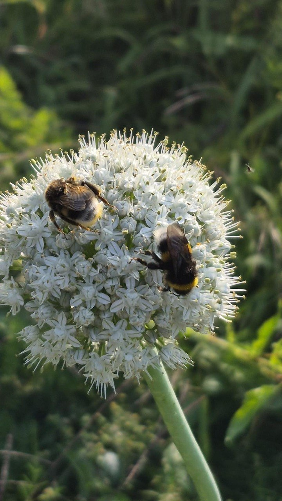
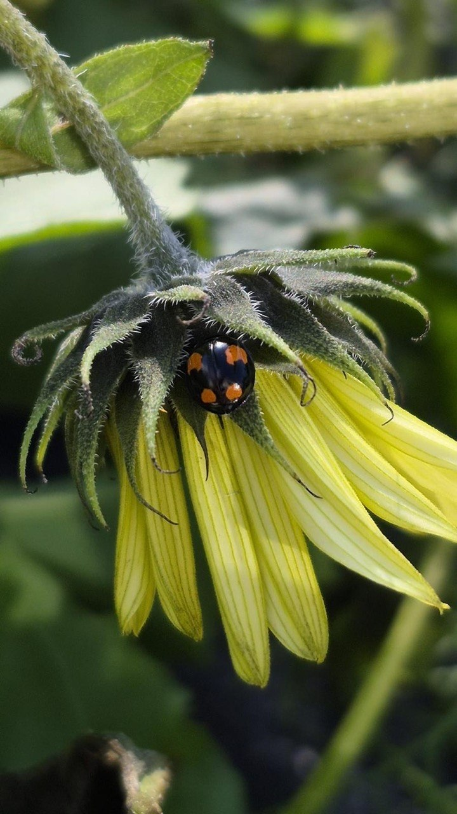

Een thuis voor biodiversiteit
In volkstuinen wisselen groente- en fruitgewassen, bloemen, hagen en bomen elkaar af. Die variatie biedt voedsel en schuilplekken aan bijen, vlinders, vogels en andere kleine dieren. Tuinders kunnen bovendien bewust kiezen voor inheemse bloemen, compost en natuurvriendelijk beheer. Verschillende tuinders zijn ook imker; hun bijen helpen bloemen en gewassen bestuiven.

